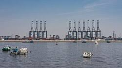
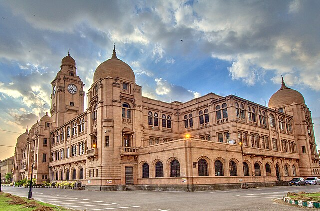

Karachi has a long and rich history. During the British colonial period, it developed into an important seaport and trade center. The city grew rapidly due to its strategic location along the Arabian Sea. Ports, harbors, and trading networks helped Karachi emerge as a hub of commerce and industry. British colonial architecture and infrastructure also influenced the city’s layout, leaving behind historical buildings that still stand today.
After the independence of Pakistan in 1947, Karachi became the first capital of the country. Large numbers of migrants arrived from various regions, bringing diverse languages, cultures, and traditions. This migration shaped the social and cultural fabric of Karachi, making it a truly cosmopolitan city. Over the decades, Karachi’s population swelled, and the city expanded in all directions, with neighborhoods, markets, and industrial zones emerging rapidly.
Today, Karachi stands as a symbol of growth and resilience. Its historical background continues to influence its economy, culture, and development. The city hosts major industries, financial institutions, and educational centers, reflecting its role as Pakistan’s economic powerhouse. Despite challenges such as urban congestion and infrastructure strain, Karachi continues to adapt, innovate, and thrive, maintaining its unique identity and vibrant spirit.
Every honking horn, bustling street, and coastal wave adds to Karachi’s heartbeat. It is alive with dreams, ambitions, and stories of millions. The “pulse” symbolizes not only the city’s energy, but also its cultural richness and the unstoppable spirit of its people.